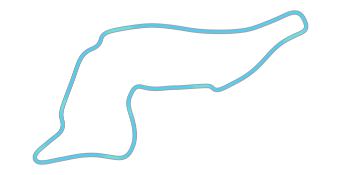
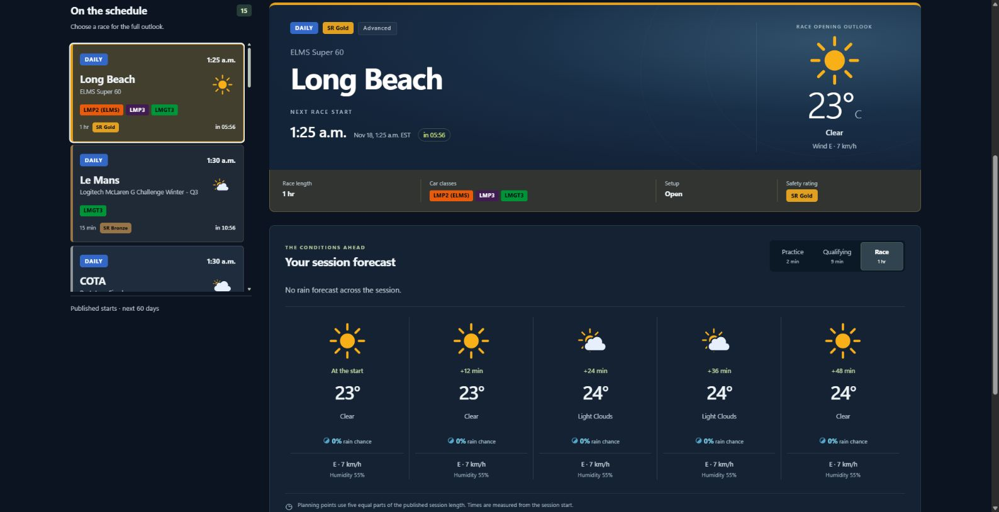

JUST ONEMORELAP.

DRIVE 0.6.47 / EXAMPLE DATA
For the rain that changes the race.
The wheel that feels like yours.
And the lap you can’t leave alone.
HEADSET ON.
LIGHTS OUT.
An LMU cockpit that feels like your cockpit.
Race information where you want it. Instruments with the character of your car. A track view that gives changing conditions a place on the map.


02 / CONDITIONS ARE PART OF THE RACE
THE RAIN
IS ONLY
THE START.
A passing shower doesn’t leave the whole circuit the same. Drive’s surface research explores how wetting, traffic and drying can become a useful picture of the road ahead.
See what’s behind the view ↗
ESTIMATED SURFACE.
CHANGE CARS.
KEEP THE FEEL.
Your Asetek wheelbase. Your saved RaceHub profiles. RookForce follows the car and checks which profile is active, so the next car feels the way you chose.
ASETEK FORTE — FULL SUPPORT
Other wheelbases — partial support.
Focused on LMU. Also supports AC Evo.

BEFORE THE LIGHTS / LMU PLANNER
THERE’S
A GRID
WITH YOUR
NAME ON IT.
Find the next online start, the classes on the grid, and the published weather. Keep LMU closed until you’re ready.
Open the full race forecast ↗
PLANNER INTERFACE / NOVEMBER 18 · OPEN FOR LIVE STARTS ↗Checking the next published starts…
Community schedule from LMU Portal. Checks every 30 seconds while open. Times follow your browser’s timezone.
BY A RACER. FOR THE NEXT RACER.
FREE FIRST.
GOOD LAPS
TOGETHER.
Getting the tools into your hands is the point. Come share a lap, a good idea, a rough edge, or something you’d love to see next.
Feedback, ideas & Discord